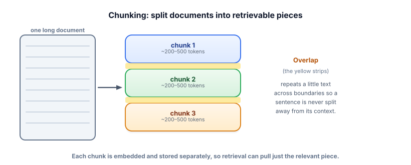
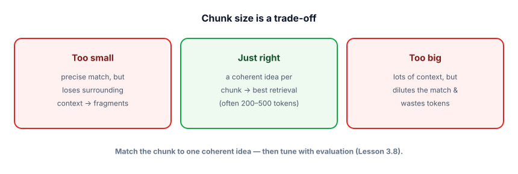

Chunking strategies
Retrieval never fetches a whole document, only chunks.
A chunk is a short slice of text that gets its own vector and is found on its own.
Chunk size is how long each slice is, usually counted in tokens.
Overlap repeats the end of one chunk at the start of the next one.
Then an idea cut at the border still sits whole in one chunk.
Too small, and a chunk loses its meaning; too big, and it blurs many topics into one match.
Chunking is cutting a long recipe book into index cards so you can pull out just the card you need. Cut too small and the card says "add the eggs" without saying which dish; cut too big and you pull out a whole chapter when you wanted one step. Overlap is writing the last line of each card again at the top of the next, so a step that ran across two cards is still whole on one of them.
| In the picture | In the real system |
|---|---|
| One index card | One chunk: embedded and stored as a single retrievable unit |
| How much you write per card | Chunk size, e.g. 240 tokens |
| Copying the last line onto the next card | Overlap, e.g. 40 tokens shared by neighbouring chunks |
| A card that says “add the eggs” with no dish | A chunk too small to carry its context |
| Pulling a whole chapter for one step | A chunk so big that its vector matches many questions weakly |
Where the picture breaks. A person reading cards can flip to the next one; a retriever only sees the cards it scored highest.
Drag chunk size and overlap over a real paragraph. The chunks, their count and the shared words are computed live, the same way as the lesson's chunk_text() function.
Going deeper
Retrieval doesn’t fetch documents — it fetches chunks. How you cut your text into chunks quietly determines whether the right information can ever be found. This is the most underrated lever in RAG, and the easiest to get wrong.
Why chunking decides everything downstream
You can’t embed and retrieve a whole 50-page manual as one vector — a single vector can’t represent that much, and you’d retrieve the entire thing or nothing. So you split documents into smaller chunks, embed each separately, and retrieve the few relevant ones. The catch: a chunk is the unit of retrieval. If a fact is split across two chunks, neither may score high enough to be retrieved. If a chunk is huge, the relevant sentence gets diluted by surrounding noise and the match weakens. Get chunking wrong and no amount of clever reranking later can recover the lost information.

A chunk is a contiguous span of a document that you embed and store as one retrievable unit. Chunk size is how big each one is (usually measured in tokens). Overlap is text shared between adjacent chunks — repeating, say, the last 50 tokens at the start of the next chunk — so a sentence or idea straddling a boundary still appears intact in at least one chunk.
The size trade-off

Strategies, from crude to smart
| Strategy | How it splits | When to use |
|---|---|---|
| Fixed-size | Every N tokens, with overlap | Simple baseline; works surprisingly well for prose |
| Recursive / structural | Prefer natural boundaries: paragraphs → sentences → words, only splitting smaller when too big | The sensible default — keeps sentences and paragraphs intact |
| Document-structure aware | Split on headings, list items, table rows, code blocks | Markdown, HTML, code, structured docs |
| Semantic | Split where the topic shifts (using embeddings) | When topic coherence matters and you can afford the extra compute |
See chunking happen
Drag the sliders. Watch how chunk size and overlap reshape what becomes retrievable. Tiny chunks fragment ideas; huge chunks swallow many topics into one blurry vector.
Chunk visualizer
A token-aware splitter with overlap, in plain Python. (In real projects, LangChain’s free RecursiveCharacterTextSplitter does this with nicer boundary handling — but seeing the mechanism once is worth it.)
def chunk_text(text, size=120, overlap=20):
"""Split into ~`size`-word chunks that overlap by `overlap` words."""
words = text.split()
step = size - overlap
chunks = []
for i in range(0, len(words), step):
chunk = " ".join(words[i:i + size])
if chunk:
chunks.append(chunk)
if i + size >= len(words):
break
return chunks
doc = open("manual.txt").read()
chunks = chunk_text(doc, size=120, overlap=20)
print(len(chunks), "chunks")
# attach metadata so you can cite + filter later — do this from day one
records = [{"text": c, "source": "manual.txt", "chunk_id": i} for i, c in enumerate(chunks)]Notice the metadata on each chunk (source, id). You’ll thank yourself later: it’s what lets you cite sources, filter by document, and debug which chunk produced an answer.
Assumptions: 200,000 help-centre articles, about 1,800 tokens each (360 M tokens total), embedded with all-MiniLM-L6-v2, which truncates input longer than 256 word pieces (model card). Token counts below are in that model's word pieces.
- Check the ceiling first. The lesson's common 200-500 token range does not apply blindly: a 500-token chunk would lose its last 244 tokens (about half) silently. So chunk size must be at most 256.
- Pick size 240, overlap 40. Step = 240 - 40 = 200. Start positions 0, 200, ..., 1,600; the chunk starting at 1,600 would end at 1,840, past the end, so it is the last (and only 200 tokens long). That is 9 chunks per article.
- Count. 200,000 x 9 = 1.8 M chunks. Tokens embedded = 8 x 240 + 200 = 2,120 per article, about 18% more than the 1,800 raw tokens. That 18% is the price of overlap.
- Storage. 384 dimensions x 4 bytes (float32) = 1,536 bytes per vector. 1.8 M x 1,536 = 2.76 GB of vectors, plus the chunk text itself (about 360 M tokens x roughly 4 bytes per token of English, around 1.4 GB, an estimate).
- Compare a tiny-chunk design. Size 120, overlap 20 gives step 100 and 18 chunks per article: 3.6 M vectors, 5.5 GB, and each chunk is so short that a question like "how do I reset 2FA on a new phone" may need three of them.
Decision: 240/40 with structure-aware splits (never cut inside a numbered procedure), then check recall@k on a golden set (Lesson 3.8) before believing it.
- The chunk is the unit of retrieval — chunking decides what can ever be found.
- Use overlap so ideas spanning a boundary survive intact in at least one chunk.
- Chunk size is a trade-off: too small fragments context, too big dilutes the match. Aim for one coherent idea (often ~200–500 tokens).
- Prefer recursive/structural splitting (respect paragraphs, headings, code) over blind fixed cuts.
- Attach metadata (source, id, section) to every chunk from the start — for citations, filtering, and debugging.
Your RAG bot answers questions about API docs well, except it keeps missing answers that depend on a code example following a heading. What’s the most likely chunking issue?
Why does chunk overlap matter?
You use an embedding model with a 256-token input limit and chunk your documents at 600 tokens. What happens?
1. In the visualizer, set overlap to 0 and find a sentence that gets split across two chunks. Then add overlap and confirm it’s now intact somewhere. Why does this matter for retrieval?
2. You’re chunking a CSV-like FAQ where each Q&A is 1–2 sentences. What chunk strategy and size would you pick?
3. Why is attaching source and chunk_id metadata essential for a citable RAG system?
▸ Show solutions & reasoning
1. With no overlap, a sentence straddling a boundary is half in chunk A and half in chunk B — so the full idea isn’t in either, and a query matching that idea may retrieve neither well. Overlap repeats the boundary text, so the whole sentence appears intact in at least one chunk and can be matched and retrieved. Overlap is cheap insurance against boundary loss.
2. Use structure-aware chunking: one chunk per Q&A pair. Each pair is already a coherent, self-contained idea, so you don’t want to merge several (dilution) or split one (fragmentation). Size follows the content — roughly one Q&A each, no fixed cut needed.
3. Citations require pointing at a real source: source tells the user which document a fact came from, and chunk_id lets you locate the exact passage for verification or debugging. Without it, you can ground the answer but can’t say where it came from — and you can’t investigate when a chunk produces a wrong answer. Provenance is a data-modeling decision you make at chunk time.
Once fixed-size chunking stops being good enough, a few techniques earn their keep.
- Parent-document retrieval — embed and search over small chunks for precise matching, but return the larger parent section to the model so it has full context. Best of both sizes.
- Semantic chunking — instead of cutting every N tokens, detect topic shifts (for example, when consecutive sentences’ embeddings diverge) and split there, so each chunk is topically coherent.
- Contextual or “late” chunking — prepend a short summary of the document or section to each chunk before embedding, so an isolated chunk like “It costs $40” carries the context “(about the X200 blender)” and matches better.
And don’t forget non-prose. Tables often need row- or section-level chunks with the header repeated, or they retrieve as meaningless number soup. Code should be split on function/class boundaries, not arbitrary lines. The throughline: chunking is really about preserving retrievable meaning, so the smartest strategy is whatever keeps each unit a self-contained, matchable idea. Start with recursive splitting plus overlap and metadata; reach for these only when evaluation (Lesson 3.8) shows retrieval is the bottleneck.
labs/03_rag_local.pyFree and offline once set up: Ollama with qwen2.5:7b, plus the packages in labs/README.md. From the course folder:
python labs/03_rag_local.pyWhat to look for: Section 1 chunks one refund policy two ways and prints both: fixed 12-word chunks split 'Card refunds take 5 to 7 business days' across two chunks, while sentence-aware chunks with one sentence of overlap keep it whole. The index in section 2 uses only the sentence-aware chunker. To compare retrieval, edit build_chunks in raglib.py (or set overlap_sentences=0 in chunk_sentences) and rerun section 4's gold queries.
Small samples: these labs use 5 to 20 cases so they run in minutes on a laptop. Where they report a rate, they print n and a 95% Wilson interval. Read them as a demonstration of the mechanism, not as a measured rate for your system; for that you need hundreds of cases and several seeds.
▸ Recorded output (our run, 2026-11-03, qwen2.5:7b on a laptop GPU)
out of the top 3. On this tiny corpus dense already wins; hybrid earns its keep on big corpora full of
near-identical codes (SKUs, error ids) that embeddings blur. Never assume: measure hit@k (lab 06).
5) Grounded answers with citations, and a refusal when retrieval is weak
Q: I was charged twice for one order. What happens now?
A: If you were charged twice for one order, the duplicate payment is reversed automatically within 3 business days [pay-01#0]. If it is not reversed after 3 business days, raise a billing ticket with both transaction ids.
citations=['pay-01#0'] all-cited-ids-were-retrieved=True
Q: Can I change my delivery address after the order has shipped?
A: No, you cannot change your delivery address after the order has shipped. According to [ship-03#0], the address can only be changed before the order is packed.
citations=['ship-03#0'] all-cited-ids-were-retrieved=True
Q: Do you deliver to Antarctica by drone?
A: I don't know based on our policies. (refused before calling the LLM: best cosine 0.27 < 0.35)
citations=[] all-cited-ids-were-retrieved=True
Look: every factual sentence carries an id you can check; the off-topic question is refused
cheaply by the retrieval threshold, so the model never gets a chance to make something up.Your numbers will differ a little run to run. Full log: labs/outputs. Source: labs/03_rag_local.py.
Warm-up. A 3,000-token document is chunked at size 500 with overlap 100. How many chunks do you get, and what percentage of extra tokens do you embed?
▸ Solution
Step = 500 - 100 = 400. Starts at 0, 400, 800, 1,200, 1,600, 2,000, 2,400; the chunk at 2,400 ends at 2,900 which is short of 3,000, so one more starts at 2,800 and ends at 3,300 (past the end, so it is the last). That is 8 chunks. Embedded tokens: 7 full chunks x 500 = 3,500, plus the last chunk 2,800-3,000 = 200, total 3,700. Extra = 700 / 3,000 = 23%. Overlap is cheap insurance, but it is not free: you pay it in storage, embedding time and duplicate hits.
Transfer. You are chunking a pricing page that is mostly an HTML table: 40 rows, columns Plan, Region, Monthly price, Seats. Users ask things like "What does Pro cost in the EU?" How do you chunk it?
▸ Solution
Chunk by row (or small groups of rows) and repeat the header in every chunk, for example "Plan: Pro | Region: EU | Monthly price: ... | Seats: ...". A fixed-size cut would produce chunks of bare numbers with no column names, which embed as number soup and match nothing. Add metadata (source page, table name, plan, region) so you can also filter on region. This is the general rule for structured content: each chunk must make sense read alone.
Stretch. Retrieval on a legal corpus is weak because clauses say things like "the Supplier shall indemnify the Customer" without naming the contract. Design a chunking change and say how you would prove it helped.
▸ Solution
Use contextual chunking: before embedding, prepend a short header to each chunk built from document metadata, e.g. "Contract: Acme-Globex MSA 2025, Section 12 Indemnification". Keep the original chunk text for display and citation. Better still, combine it with parent-document retrieval: search on small clause-sized chunks, return the whole section to the model. To prove it, build a golden set of 100+ real questions with the clause that answers each, then compare recall@5 and MRR before and after on the same embedder and k. Also track chunk count and storage, since headers add tokens. Ship only if recall moves by more than the noise of a set that size (Lesson 3.8 shows how to size that).
Junior What is chunk overlap and why use it?
▸ Model answer
Overlap repeats the end of one chunk at the start of the next, for example the last 50 tokens. Without it, a sentence or step that straddles a boundary is split in half, and neither half may match a query well enough to be retrieved. With overlap the full idea appears intact in at least one chunk. The cost is extra storage and embedding work, roughly overlap divided by step, and some duplicate results, which you can dedupe after retrieval. It does not guarantee recall; you still measure it.
Mid How do you choose a chunk size for a new corpus?
▸ Model answer
I start from constraints, not a magic number. The embedding model's max sequence length is a hard ceiling, because anything past it is silently cut. Then the content: FAQ pairs, procedures and table rows have natural units, so I split on those. For prose I start with a recursive splitter around one coherent idea per chunk with modest overlap. Then I make it empirical: build a golden set of real questions with labelled answer passages, try two or three sizes, and compare recall@k and MRR, plus token cost per query. Whichever wins on my data wins.
Senior Your company wants one chunking pipeline for PDFs, Confluence pages, code repos and Slack threads. How do you design it?
▸ Model answer
One pipeline, several splitters behind a common interface. Each source type gets a structure-aware splitter: headings and paragraphs for docs, functions and classes for code, threads or time windows for Slack, rows with repeated headers for tables. Every chunk gets the same metadata contract: source id, URL, section path, timestamps, ACL fields and a content hash, so citations, permission filters and incremental re-indexing work the same everywhere. The hash lets me re-embed only changed chunks. I version the chunker config alongside the index, because changing chunking means re-embedding. Finally, I evaluate per source type, since a size that works for docs can fail for Slack.
You’ve got chunks. Now we turn them into searchable meaning — the embeddings step, applied to retrieval at scale. Next: embeddings for retrieval.
In one line: Cut documents into slices that each hold one whole idea, and overlap the edges so nothing is cut in half.